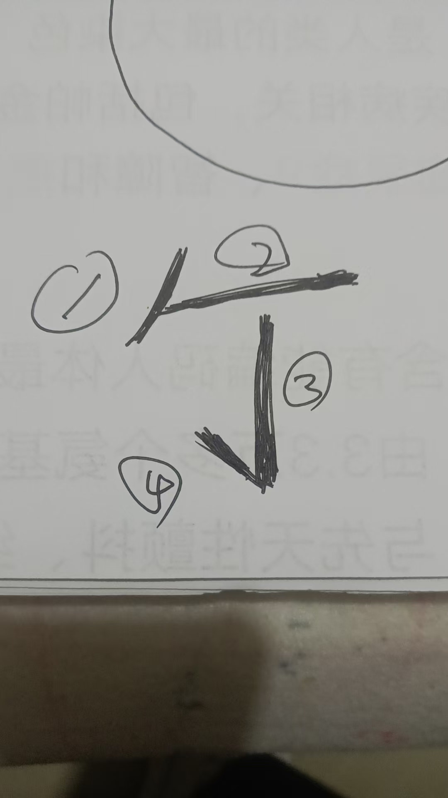

20251208开剑指，手抄本 轩辕祝由术，民间秘传修法
符咒术法修炼修行民间文化乾元亨利贞以外的修法，使用方法
这民间手抄本，详细的说了，修法
每个使用都跟着咒语
开剑指，就是把剑指输入能量，发射出去 使用，每天辰时，面向太阳，大拇指开始掐诀，天之精，地之灵，魁罡电，月斗星，罡风至，涌泉亨，乾元亨利贞。然后，右手剑诀，甩出去，喊一声开，同时，从剑指发出一道能量气。每天四十九遍，练七天
辰时，七到九点

剑指打开后，有的人感觉发热，有的人麻麻地，因人而异


三山印
托一碗水

剑指指着碗写这个 字
字
四笔
一飘金牛头，横断日月流，倒下千斤坠，一挑鬼神愁
好多呢，练好了，才能用乾元亨利贞，五部祝由法本
实际上有变化，把咱们能量注入到剑指上，剑指发热，写符字就能使用了
有宝剑，就不用写字了，直接命令业障离开，灰气变白亮，病人就好了
只要使用宝剑，就说一声，或用念力发出信息。一切神煞皆要回避。
就是说，避免病人本来在家是顶仙的，不提前说一声，会伤到附体的仙家
进不了心法修炼，也就得不到法器
有神兽坐骑，手上兵器，那就是法器
@嘉寧 下一步，静坐，演法
就是静坐，看到自己，
在练剑
剑会变化好多
看的是现在的自己还是那个自己 （当然是法身）
成千上万，
法身才能拿的动剑
那我多静坐看到法身先
说到这一步，也就是其他学生也都要这样修
这就是心法
战魔用的是心
法身也要会分身
法器也要分身无数
这法身法器是不能随便说的，泄露天机
不过群里的，也都不是平常人，应该说一下
关键是心剑合一
先把剑指修出来
你看我的剑指，往后拖的时候，是不是带着光气的尾巴
始能当面使用，时间长了，能隔空化解千里之外